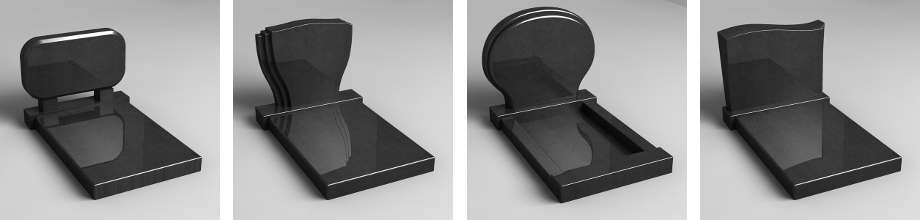
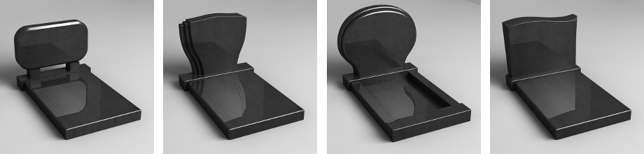

Формы продукции


 


ПАМЯТНИКИ ИЗ ГРАНИТА В ХЕРСОНЕ, КУПИТЬ НАДГРОБНЫЕ ПАМЯТНИКИ
Наша компания предлагает Вашему вниманию надгробные памятники в Херсоне в широком ассортименте, из натурального камня габбро, гранита, лабрадорита, мрамора. Мы изготавливаем надгробия как самого популярного, черного цвета, так и всех гамм цветного гранита, а также различных форм и размеров. А кроме того, модельный ряд нашей продукции включает в себя стандартные типовые формы, а также эксклюзивные памятники, изготовленные по индивидуальным заказам согласно предоставленных эскизов, составленных Вами, или нашими сотрудниками с учетом Ваших пожеланий.
В работе мы используем разнообразные граверные работы, художественные навыки, современные технологии обработки камня и внимательный подход к каждому заказу. Это позволяет нам изготавливать высококачественные и красивые памятники из гранита в Херсоне, которые будут полностью соответствовать всем Ваши требованиям и пожеланиям.
Главными принципами нашей работы являются высокое качество готовых изделий, краткие сроки выполнения заказов, и красивое художественное и граверное оформление надгробий. Штат высококвалифицированных и опытных работников, ответственность, и самое современное оборудование позволяют нам предоставлять гарантии на все виды выполненных работ. Мы работаем с прямыми поставками сырья, благодаря чему формируется самая выгодная цена на изготовление памятников в Херсоне. Двадцатилетний опыт изготовления позволяет нам в самые краткие сроки производить и небольшие партии готовых изделий, и крупные заказы с большим количеством моделей.
Благодаря высокому качеству используемых материалов, профессиональному подходу и художественному исполнению, наши изделия отличаются прочностью, долговечностью, устойчивостью к атмосферным явлениям и механическим повреждениям, а также великолепным внешним видом. Если Вам необходимо купить памятник в Херсоне, то мы готовы предложить Вам вертикальные и горизонтальные варианты на любой вкус, включая бютжетные бетонные памятники.
Наша компания предлагает широкий спектр дополнительных услуг по изготовлению и установке изделий из камня, а также общему благоустройству места захоронения. Мы поможем Вам в оформлении цветников и ваз для цветов, установим ограды, скамейки и столы и возьмем на себя заливку бетонных оснований, облицовку гранитной плитки и укладку тротуарной. У нас Вы сможете заказать изготовление цветных объемных фотографий и реставрацию старых памятников, а также услугу порезки и полировки гранита.
Кроме того, помимо изготовления качественных надгробий в городе, наша компания занимается изготовлением и установкой поклонных крестов, что является нашей несомненной гордостью и достижением. Также, в активе наших работ производство и установка мемориальных табличек выдающимся личностям Херсонщины.
Мы работаем по всей Херсонской области. У нас заказывают памятники Каховка, Новая Каховка, Скадовск, Геническ и другие города области.